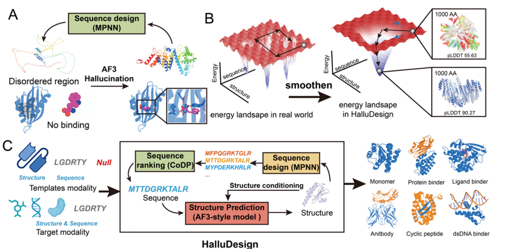
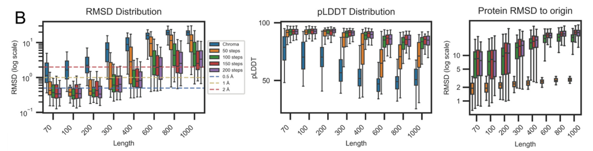
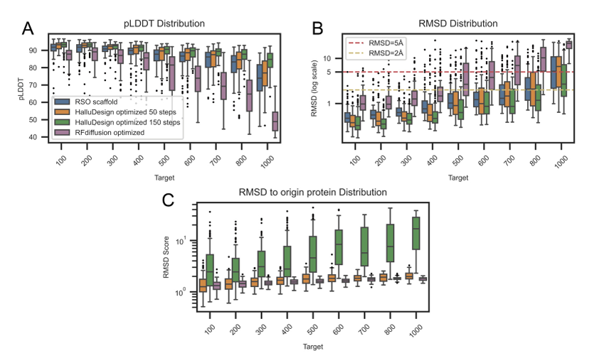
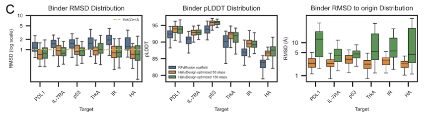
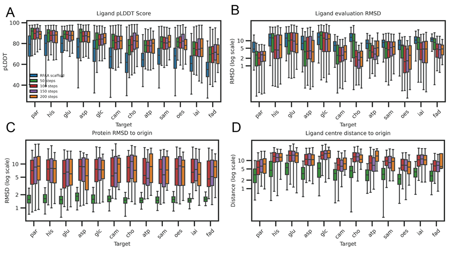
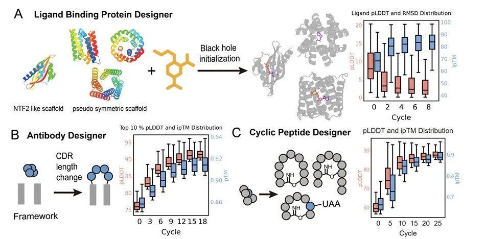
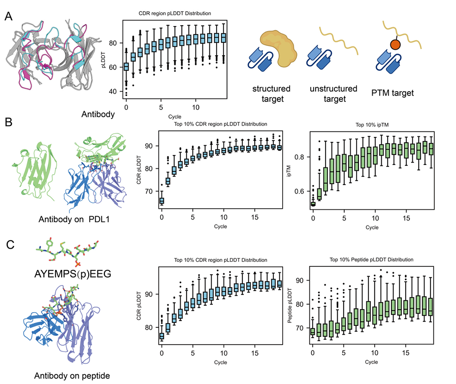
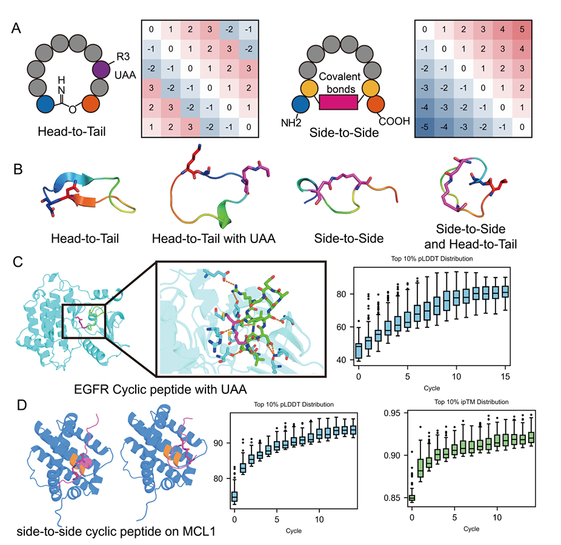
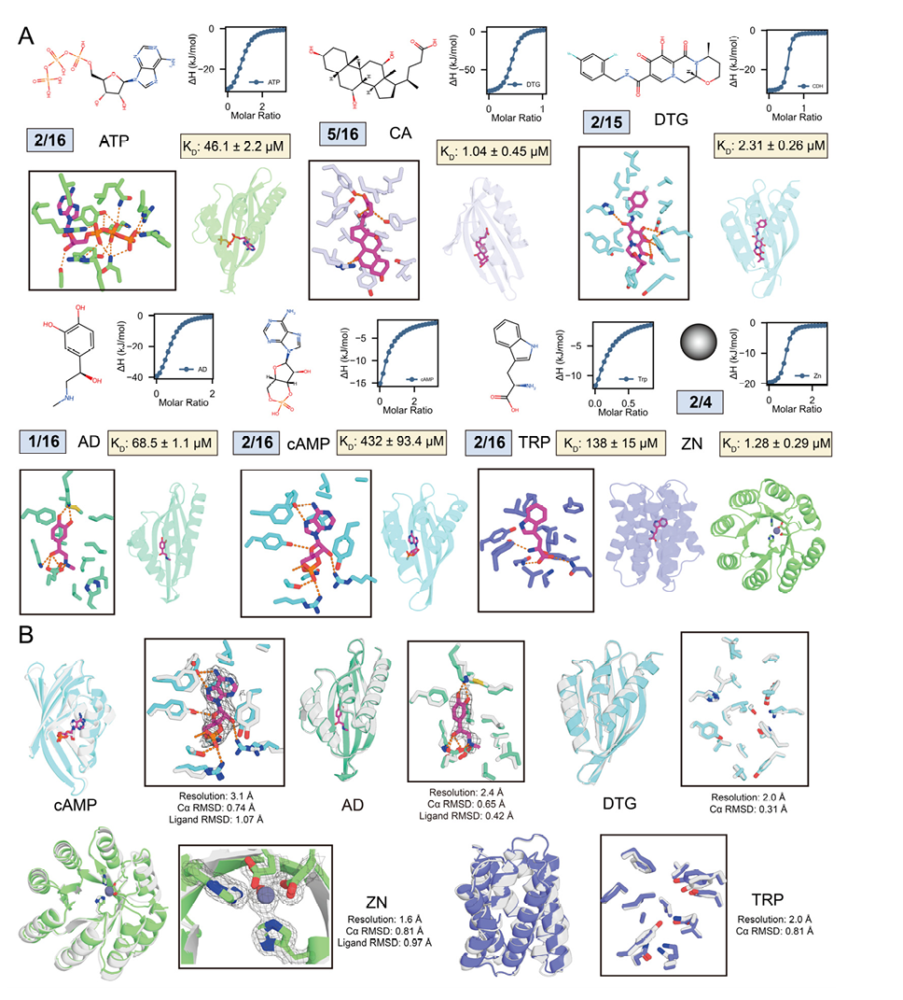
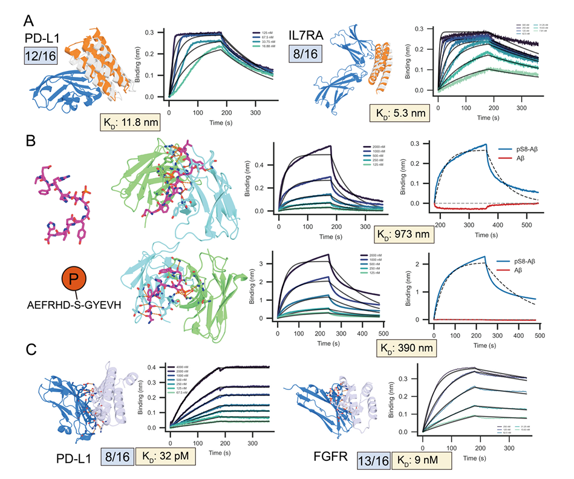

近年来，AlphaFold3将蛋白质结构预测推向了“原子级精度”时代。但随之而来的是两个更深层的问题：如此强大的预测能力，能否突破“预测”的边界，直接用于“设计”新蛋白质？又能否摆脱传统依赖，无需微调、无需反向传播，就实现结构与序列的共同优化？
西湖大学曹龙兴团队（师从诺贝尔化学奖获得者David Baker）的最新研究《HalluDesign: Hallucination-Driven Protein Design with Forward-Only AlphaFold3》给出了颠覆性答案——HalluDesign。该框架巧妙利用AlphaFold3扩散模块特有的“结构幻觉”能力，通过迭代式生成，引导蛋白质自发“生长”出稳定结构、精准结合口袋，甚至演化出全新的蛋白形态。
什么是 HalluDesign？
HalluDesign 的核心是 “结构幻觉” 与 “迭代设计” 的结合。与传统方法依赖大规模模型微调、反向传播优化和海量候选筛选不同，它实现了无需梯度、无需微调、无需高通量筛选的设计范式，仅通过前向预测与实时监控（pLDDT/ipTM）即可完成优化。
该框架包含两个循环交替的阶段：
🔁 阶段一：结构更新 — 利用AF3扩散模块进行“可控幻觉”
核心工具：AlphaFold3 扩散模块
关键操作：截断扩散轨迹，注入可控噪声
工作流程：从当前结构/噪声开始 → 加噪 → 逆扩散生成“更理想”的结构
噪声调控：
低噪声（约50步）：局部精修，保持主体拓扑，适用于结构优化。
高噪声（150–200步）：全局重塑，跳出局部极小值，适用于从头设计。
核心优势：直接利用AF3的“幻觉”能力，在低置信区域生成合理的蛋白构象。
🔁 阶段二：序列设计 — 通过逆折叠与轻量打分快速适配
序列生成：使用 ProteinMPNN / LigandMPNN，根据新结构生成兼容序列。
序列筛选：
工具：自研轻量模型 CoDP
训练：基于AFDB结构与ProteinMPNN合成数据，通过对比学习区分序列置信度。
功能：为生成序列快速打分，并筛选出最优候选。
迭代循环：将最优序列送回阶段一，开启下一轮结构优化。
效率优势：本阶段速度比结构更新快10倍以上，保障了迭代效率。
通过以上两个阶段的循环迭代，系统能够有效提升蛋白质的结构稳定性、配体匹配度及整体模型信心。

实战应用全景图（覆盖四大设计场景）
1. 蛋白质优化
输入来源：Chroma、RSO、RFdiffusion 生成的单体或复合物（低质量）
优化表现：
Chroma 单体：短轨迹（50步）收敛较慢；长轨迹（200步）6轮即达高置信。

RSO 大蛋白（>300 aa）：HalluDesign 持续提升指标，RFdiffusion 局部扩散无效。

PPI 结合物：全靶点提升 RFdiffusion 设计的 pLDDT 与 ipTM

小分子结合物：对 RFdiffusion 全原子设计中极性大配体的优化效果最显著

2. 基于骨架的从头设计
典型适配案例
NTF2骨架通过“黑洞初始化”策略，成功结合cAMP、ATP、ADP等配体，成功率超过60%
伪周期骨架将Zn²⁺、色氨酸等配体直接置于对称轴上，获得高成功率
Herceptin scFv 骨架通过多聚甘氨酸输入，成功实现PD-L1与pS8-Aβ等靶点的结合设计
核心创新方法
采用“黑洞初始化”策略，将配体随机置于骨架中心
由HalluDesign自动完成配体位姿、侧链构象及相互作用网络的全面优化
参数配置优势
扩散步数设置为150步，效果接近200步配置
计算开销显著降低25%，实现效率与性能的平衡
性能表现对比
整体表现优于RFdiffusion all-atom与BoltzDesign
无需依赖初始对接步骤，简化设计流程


Framework-fixed, CDR-region–redesigned antibodies utilizing AlphaFold 3
3. 从零开始设计
起点构建：纯高斯噪声 + 随机序列，经 AF3 单次预测获得初始结构
迭代优化对象：环肽与大蛋白结合物
环肽设计特色：
提供靶蛋白模板，通过修改 AF3 索引实现头尾环化
支持非经典氨基酸（NCAA），实现共价键或侧链环

大蛋白设计突破：
AF3 单独预测易塌陷为单长螺旋
采用 Protenix（AF3 + 蛋白语言模型）后，语言模型嵌入可平滑能量景观，即使从“分布外”起点也能收敛
已成功设计出 PD-L1 / FGFR2 等高难度结合物
4. 实验验证：低通量、高成功率、晶体级精度
实验设计
每靶点仅测试≤16个设计
多数设计可在大肠杆菌中实现可溶表达
1). 蛋白-小分子相互作用验证
设计靶点
cAMP：采用杂合NTF2骨架，实现nM–μM级别结合力，成功复现全部7个设计氢键
肾上腺素(AD)：基于NTF2骨架，达到μM级结合，通过Leu朝向甲基实现高特异性识别
Zn²⁺：使用伪周期骨架，获得nM级强结合，四配位几何构型完美匹配设计预期
DTG/TRP：NTF2骨架在apo状态下仍保持高精度结构
特异性验证
TRP结合物严格区分Tyr/Phe结构类似物
AD结合物对去甲肾上腺素仅显示微弱结合（差异仅为一个甲基）
关键残基突变实验证实：突变后结合完全失活，证明设计精准可控

2) 蛋白-蛋白相互作用验证
设计成功率与亲和力表现
在拯救RFdiffusion失败设计的任务中：PD-L1靶点成功率达12/16，IL7RA靶点为8/16，均实现nM级别亲和力
磷酸化特异性抗体设计成功率达100%，严格专一于pS8-Aβ靶点
基于Protenix的从头设计：PD-L1成功率8/16，FGFR2达13/16，其中最强亲和力达到32 pM，创当前纪录
关键作用机制解析
pS8-Aβ抗体设计中，Arg残基形成特异性“静电开关”，精准识别磷酸基团
全新设计的蛋白结合物能与靶点β-折叠面形成高度匹配的形状与化学互补界面

HalluDesign 实现高成功率的核心优势
HalluDesign 的成功并非偶然，其背后是三项核心能力的协同作用：
1. 结构幻觉的生成能力
直接利用 AlphaFold3 扩散模块的先天结构生成潜力。
能够自动优化有缺陷的初始骨架，甚至从零“幻觉”出合理的蛋白拓扑。
2. 可控噪声的智能搜索
通过调整噪声水平，在“全局探索”与“局部精修”间自由切换。
高噪声：用于跳出局部最优，突破结构陷阱。
低噪声：用于精细优化结合口袋（pocket）和柔性区域（loop）。
3. 多模型协同的集成优势
有机整合 AF3 / Protenix / ProteinMPNN / CoDP 等前沿工具。
在不进行额外训练或微调的前提下，融合各模型所长，最终涌现出强大的蛋白质设计能力。
与此同时，作者也明确指出HalluDesign目前仍面临若干挑战。首先，在从头设计大尺寸蛋白质时，AlphaFold3仍可能生成不合理结构，例如塌陷为单一的α-螺旋。其次，尽管Protenix的语义扩散机制强大，但在环肽等高自由度体系中容易产生“过幻觉”现象，影响结构合理性。此外，当优化器与评价器基于同源模型时，可能因评分偏好导致结果虚高，因此仍需依赖异源模型验证或实验数据作为最终评判依据。
小Z总结
我初入AIDD领域时，读的第一篇文章正是来自曹龙兴老师在Baker实验室发表的《Design of protein-binding proteins from the target structure alone》。可以说，那是我科研路上的重要起点。后来我还特意去YouTube上看了Brian对这项工作的解读视频，这段经历至今记忆犹新，可以说，曹老师的工作就是我的“启蒙老师”。
三四年过去，这个领域依然在蓬勃发展中。衷心期待曹老师在西湖大学继续取得丰硕成果，带领团队产出更多具有影响力的工作！